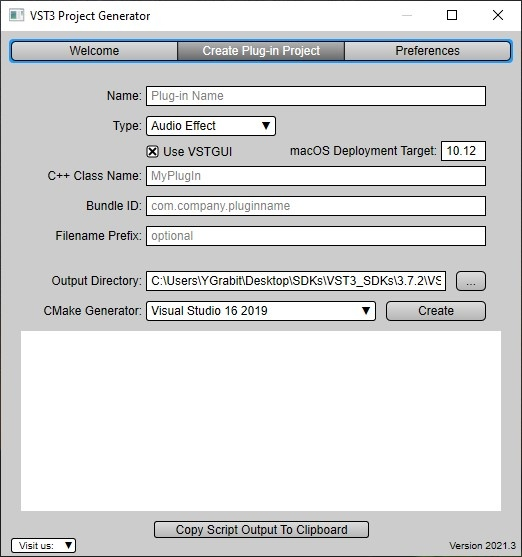
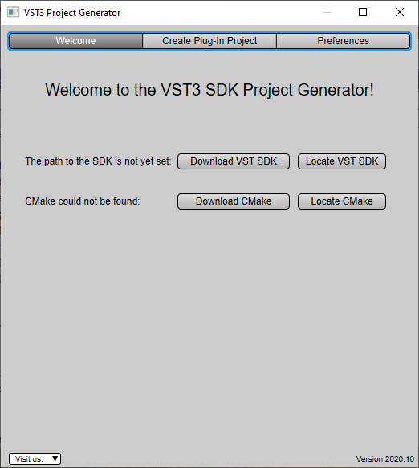
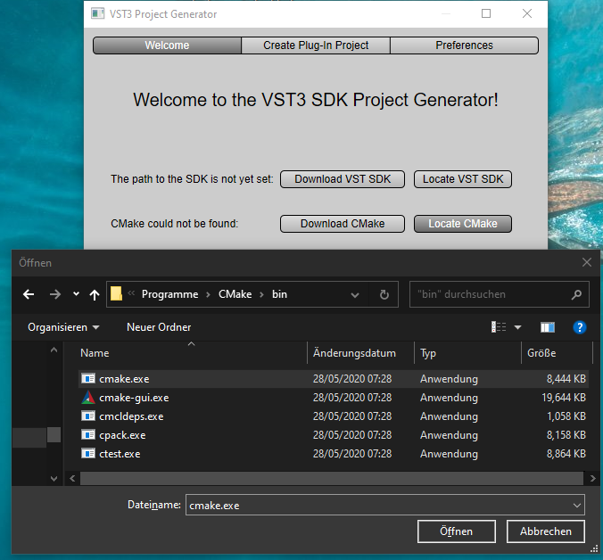
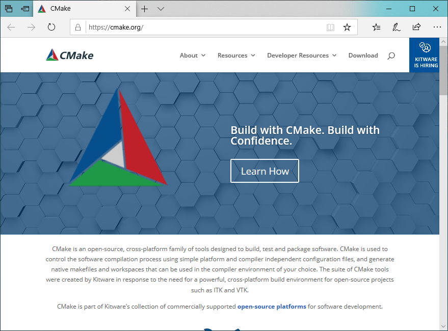
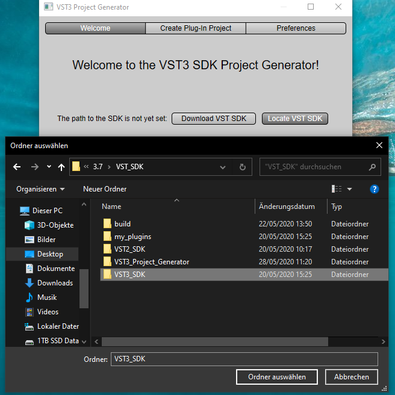
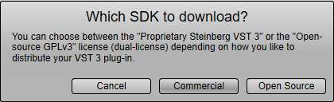
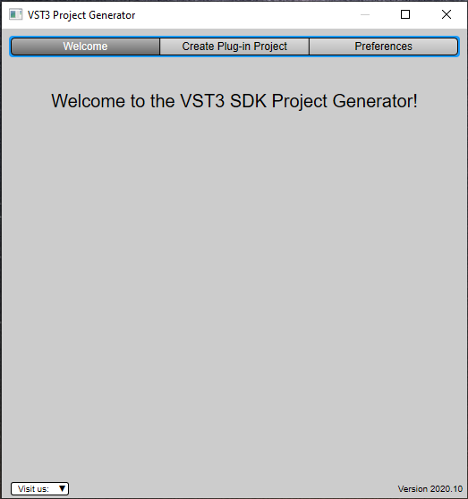
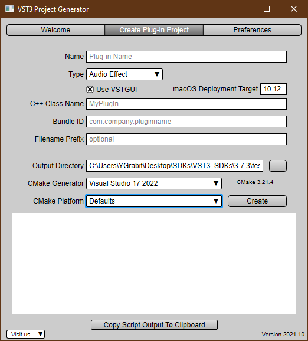

/ VST Home / What is the VST SDK?
VST 3 Project Generator
On this page:
- Introduction
- Start the VST 3 Project Generator Application
- Setting the Preferences
- Setting and creating a plug-in project
- VST 3 Project Generator License
Related pages:
Introduction
This open source application (Win/macOS) allows you to generate easily a new VST 3 plug-in project by just entering in a GUI some parameters.

Check the folder "VST3_Project_Generator" of the SDK!
The source code is available at GitHub - steinbergmedia/vst3projectgenerator: VST 3 Project Generator.
Start the VST 3 Project Generator Application

The first time you start the application, you will ask to define 2 folders where are located the VST SDK and the CMake tool. It still possible to change these folders afterward in the Preferences Tab, see Setting the Preferences.
The Visit us menu includes some useful links.
Locate CMake
If you have already downloaded the CMake tool, you just have to indicate the Project Generator where it is located, for this click on Locate CMake and choose with the file selector the cmake.exe file:

If you do not have previously installed the CMake tool, you could download it, just click on Download CMake, an internet browser will open the dedicated CMake webpage, check the Download section and install CMake.

Locate VST SDK
If you have already downloaded the VST SDK, you just have to indicate the Project Generator where it is located, for this click on Locate VST SDK and choose with the folder selector the VST3_SDK folder:

If you do not have previously installed the VST SDK, you could download it, just click on Download VST SDK, a dialog appears:

You have 2 possibilities to download the VST SDK:
- Commercial: by clicking on it you will be redirected to the latest available SDK version to download, including all tools (check What is the VST SDK?), with this variant of the SDK you are able to create and commercialize your plug-ins (See What are the licensing options for VST 3?).
- Open Source: by clicking on it you will be redirected to Steinberg Github where you will be able to clone the VST SDK, this variant does not include all available tools (See What are the licensing options for VST 3?).
VST SDK and cmake successfully located
As soon as the requested 2 locations are founded, the user interface of the application should like this:

The next time you start the Project Generator application you will not asked to relocate them!
Setting the Preferences
Before creating any plug-in project, you have to define some global preferences which will be automatically saved when closing the application. On Windows, these preferences are saved in the registry entry: Computer\HKEY_CURRENT_USER\Software\com.steinberg.vst3sdk.projectgenerator.
Company Information
The information included in this subsection will be used for generating Factory information associated to all plug-ins you will generate. This will be read by the host application loading your plug-ins and the host may display it to an user.
- Vendor: this is your Company name: e.g. "Steinberg Media Technologies GmbH"
- E-Mail: your email, which could be used by the host to redirect an user to your support for example: e.g. "mailto:support@steinberg.net"
- URL: the URL of your Company: e.g. "https://www.steinberg.net"
- C++ Namespace: this allows you to predefine a namespace which will be used to surround your plug-in source code: e.g. "MyWantedNamespace":
//...
namespace MyWantedNamespace {
//-----------------------------------------------------------------------
MyPluginController::MyPluginController ()
{
//...
}
} // end namespace
//...
namespace MyWantedNamespace {
Path Preferences
Like mentioned above in the subsection Path Preferences you could change several locations:
- VST SDK Path: the current used VST SDK you have previously downloaded.
- CMake Executable Path: the current used CMake tool
Setting and creating a plug-in project
In this tab you are defining some information for the creation of a new plug-in:

- Name: the name of the plug-in which is displayed in a host: e.g. "AGain"
- Type: this specifies the main VST 3 Sub-Category (PlugType) of your plug-in:
- Audio Effect: (kFx) a simple audio effect Stereo→Stereo
- Instrument: (kInstrument) a simple instrument with 1 Event input and 1 stereo Audio output
- Use VSTGUI: check this if you want to use VSTGUI as UI framework
- macOS Deployment Target: enter here the minimum requested macOS version targeted
- C++ Class Name: this specifies the basename of your plug-in classes: e.g. "AGain"
class AGainProcessor : public AudioEffect
{
//...
};
class AGainController : public EditControllerEx1
{
//...
};
- Bundle ID: this is the ID needed, for example, for the Info.plist of macOS: e.g. "com.steinberg.again"
- Filename Prefix: (optional) this will be added as file prefix to the created files: e.g. "AGain" => AGainProcessor.cpp / AGainController.h / ...
- Output Directory: you define here in which folder your project will be created
- CMake Generator: CMake tool required to define a generator in order to create configuration files for a specific build system: there are 2 kinds of generators: Command-Line and IDE. Choose the one you need for example:
- on Windows: Visual Studio 17 2022
- on macOS: Xcode
- CMake Platform: you could here define which target platform should be used, i.e x64 or ARM64EC (on Windows)
Once all information is set up, you could click on Create, a script will create and CMake will be used and the chosen IDE will be opened. In the bottom area the script output is displayed, you have the possibility to copy it by using the dedicated button: Copy Script Output To Clipboard.
Example of script Output
C:\Program Files\CMake\bin\CMake.exe C:\Users\YGrabit\Desktop\SDKs\VST3_SDKs\3.7.7\VST_SDK\VST3_Project_Generator\
Windows_x64\Resources\GenerateVST3Plugin.cmake
-DSMTG_VST3_SDK_SOURCE_DIR_CLI="C:/Users/YGrabit/Desktop/SDKs/VST3_SDKs/3.7.6/VST_SDK/vst3sdk"
-DSMTG_GENERATOR_OUTPUT_DIRECTORY_CLI="C:/Users/YGrabit/Desktop/SDKs/VST3_SDKs/3.7.7"
-DSMTG_PLUGIN_NAME_CLI="AGain" -DSMTG_PLUGIN_CATEGORY_CLI="Fx" -DSMTG_CMAKE_PROJECT_NAME_CLI="AGain"
-DSMTG_PLUGIN_BUNDLE_NAME_CLI="AGain" -DSMTG_PLUGIN_IDENTIFIER_CLI="com.steinberg.again"
-DSMTG_MACOS_DEPLOYMENT_TARGET_CLI="10.13" -DSMTG_VENDOR_NAME_CLI="Steinberg"
-DSMTG_VENDOR_HOMEPAGE_CLI="www.steinberg.net" -DSMTG_VENDOR_EMAIL_CLI="info@steinberg.net"
-DSMTG_PREFIX_FOR_FILENAMES_CLI="" -DSMTG_PLUGIN_CLASS_NAME_CLI="AGain" -DSMTG_ENABLE_VSTGUI_SUPPORT_CLI=ON
-P "C:\Users\YGrabit\Desktop\SDKs\VST3_SDKs\3.7.7\VST_SDK\VST3_Project_Generator\
Windows_x64\Resources\GenerateVST3Plugin.cmake"
==================================================
Steinberg Media Technologies GmbH
VST 3 Project Generator
==================================================
-- Found Git: C:/Program Files/Git/cmd/git.exe (found version "2.38.1.windows.1")
-- SMTG_CMAKE_SCRIPT_DIR : C:/Users/YGrabit/Desktop/SDKs/VST3_SDKs/3.7.7/VST_SDK/VST3_Project_Generator/Windows_x64/Resources
-- SMTG_ENABLE_VSTGUI_SUPPORT : ON
-- SMTG_GENERATOR_OUTPUT_DIRECTORY : C:/Users/YGrabit/Desktop/SDKs/VST3_SDKs/3.7.7
-- SMTG_TEMPLATE_FILES_PATH : C:/Users/YGrabit/Desktop/SDKs/VST3_SDKs/3.7.7/VST_SDK/VST3_Project_Generator/Windows_x64/Resources/cmake/templates
-- SMTG_VST3_SDK_SOURCE_DIR : C:/Users/YGrabit/Desktop/SDKs/VST3_SDKs/3.7.6/VST_SDK/vst3sdk
-- SMTG_VENDOR_NAME : Steinberg
-- SMTG_VENDOR_HOMEPAGE : www.steinberg.net
-- SMTG_VENDOR_EMAIL : info@steinberg.net
-- SMTG_SOURCE_COPYRIGHT_HEADER: Copyright(c) 2022 Steinberg.
-- SMTG_PLUGIN_NAME : AGain
-- SMTG_PREFIX_FOR_FILENAMES : e.g. myplugincontroller.h
-- SMTG_PLUGIN_IDENTIFIER : com.steinberg.again, used e.g. in Info.plist
-- SMTG_PLUGIN_BUNDLE_NAME : AGain
-- SMTG_CMAKE_PROJECT_NAME : e.g. AGain will output AGain.vst3
-- SMTG_VENDOR_NAMESPACE : e.g. namespace MyCompanyName {...}
-- SMTG_PLUGIN_CLASS_NAME : e.g. class AGainProcessor : public AudioEffect {...}
-- SMTG_PLUGIN_CATEGORY : Fx
-- SMTG_MACOS_DEPLOYMENT_TARGET: 10.13
-- SMTG_Processor_UUID : 0x310DE7F8, 0x10DA54D2, 0x98DE9223, 0xA9933093
-- SMTG_Controller_UUID : 0x80068D40, 0xBA125C34, 0x9B1E857C, 0xC17CD5F3
-- Configured: C:/Users/YGrabit/Desktop/SDKs/VST3_SDKs/3.7.7/AGain/CMakeLists.txt
-- Copied : C:/Users/YGrabit/Desktop/SDKs/VST3_SDKs/3.7.7/AGain/resource/310DE7F810DA54D298DE9223A9933093_snapshot.png
-- Copied : C:/Users/YGrabit/Desktop/SDKs/VST3_SDKs/3.7.7/AGain/resource/310DE7F810DA54D298DE9223A9933093_snapshot_2.0x.png
-- Configured: C:/Users/YGrabit/Desktop/SDKs/VST3_SDKs/3.7.7/AGain/resource/myplugineditor.uidesc
-- Configured: C:/Users/YGrabit/Desktop/SDKs/VST3_SDKs/3.7.7/AGain/resource/win32resource.rc
-- Configured: C:/Users/YGrabit/Desktop/SDKs/VST3_SDKs/3.7.7/AGain/source/version.h
-- Configured: C:/Users/YGrabit/Desktop/SDKs/VST3_SDKs/3.7.7/AGain/source/myplugincids.h
-- Configured: C:/Users/YGrabit/Desktop/SDKs/VST3_SDKs/3.7.7/AGain/source/myplugincontroller.cpp
-- Configured: C:/Users/YGrabit/Desktop/SDKs/VST3_SDKs/3.7.7/AGain/source/myplugincontroller.h
-- Configured: C:/Users/YGrabit/Desktop/SDKs/VST3_SDKs/3.7.7/AGain/source/mypluginentry.cpp
-- Configured: C:/Users/YGrabit/Desktop/SDKs/VST3_SDKs/3.7.7/AGain/source/mypluginprocessor.cpp
-- Configured: C:/Users/YGrabit/Desktop/SDKs/VST3_SDKs/3.7.7/AGain/source/mypluginprocessor.h
C:\Program Files\CMake\bin\CMake.exe -G "Visual Studio 17 2022" -A x64 -S "C:/Users/YGrabit/Desktop/SDKs/VST3_SDKs/3.7.7\AGain" -B "C:/Users/YGrabit/Desktop/SDKs/VST3_SDKs/3.7.7\AGain\build" -DSMTG_ADD_VSTGUI=ON
-- Selecting Windows SDK version 10.0.22000.0 to target Windows 10.0.19045.
-- The C compiler identification is MSVC 19.34.31935.0
-- The CXX compiler identification is MSVC 19.34.31935.0
-- Detecting C compiler ABI info
-- Detecting C compiler ABI info - done
-- Check for working C compiler: C:/Program Files/Microsoft Visual Studio/2022/Professional/VC/Tools/MSVC/14.34.31933/bin/Hostx64/x64/cl.exe - skipped
-- Detecting C compile features
-- Detecting C compile features - done
-- Detecting CXX compiler ABI info
-- Detecting CXX compiler ABI info - done
-- Check for working CXX compiler: C:/Program Files/Microsoft Visual Studio/2022/Professional/VC/Tools/MSVC/14.34.31933/bin/Hostx64/x64/cl.exe - skipped
-- Detecting CXX compile features
-- Detecting CXX compile features - done
-- [SMTG] CMAKE_SOURCE_DIR is set to: C:/Users/YGrabit/Desktop/SDKs/VST3_SDKs/3.7.7/AGain
-- [SMTG] CMAKE_CURRENT_LIST_DIR is set to: C:/Users/YGrabit/Desktop/SDKs/VST3_SDKs/3.7.6/VST_SDK/vst3sdk
-- [SMTG] Disable all VST3 samples
-- [SMTG] SMTG_VSTGUI_SOURCE_DIR is set to: C:/Users/YGrabit/Desktop/SDKs/VST3_SDKs/3.7.6/VST_SDK/vst3sdk/vstgui4
-- Could NOT find EXPAT (missing: EXPAT_LIBRARY EXPAT_INCLUDE_DIR)
-- VSTGUI will use the embedded Expat package!
-- [SMTG] SMTG_AAX_SDK_PATH is not set. If you need it, please download the AAX SDK!
-- Performing Test SMTG_USE_STDATOMIC_H
-- Performing Test SMTG_USE_STDATOMIC_H - Failed
-- [SMTG] Setup running moduleinfotool for AGain
-- [SMTG] Setup running validator for AGain
-- [SMTG] SMTG_PLUGIN_TARGET_PATH is set to: C:\Users\YGrabit\AppData\Local\Programs\Common\VST3
-- Configuring done
-- Generating done
-- Build files have been written to: C:/Users/YGrabit/Desktop/SDKs/VST3_SDKs/3.7.7/AGain/build
That´s it!
You can contribute to this project on https://github.com/steinbergmedia/vst3projectgenerator!
VST 3 Project Generator License
BSD style
VST3ProjectGenerator LICENSE
(c) Steinberg Media Technologies, All Rights Reserved
Redistribution and use in source and binary forms, with orwithout modification,
are permitted provided that the following conditions are met:
* Redistributions of source code must retain the abovecopyright notice,
this list of conditions and the following disclaimer.
* Redistributions in binary form must reproduce the abovecopyright notice,
this list of conditions and the following disclaimer inthe documentation
and/or other materials provided with the distribution.
* Neither the name of the Steinberg Media Technologies northe names of its
contributors may be used to endorse or promote productsderived from this
software without specific prior written permission.
THIS SOFTWARE IS PROVIDED BY THE COPYRIGHT HOLDERS ANDCONTRIBUTORS "AS IS" AND
ANY EXPRESS OR IMPLIED WARRANTIES, INCLUDING, BUT NOT LIMITEDTO, THE IMPLIED
WARRANTIES OF MERCHANTABILITY AND FITNESS FOR A PARTICULARPURPOSE ARE DISCLAIMED.
IN NO EVENT SHALL THE COPYRIGHT OWNER OR CONTRIBUTORS BELIABLE FOR ANY DIRECT,
INDIRECT, INCIDENTAL, SPECIAL, EXEMPLARY, OR CONSEQUENTIALDAMAGES (INCLUDING,
BUT NOT LIMITED TO, PROCUREMENT OF SUBSTITUTE GOODS ORSERVICES; LOSS OF USE,
DATA, OR PROFITS; OR BUSINESS INTERRUPTION) HOWEVER CAUSEDAND ON ANY THEORY OF
LIABILITY, WHETHER IN CONTRACT, STRICT LIABILITY, OR TORT (INCLUDING NEGLIGENCE
OR OTHERWISE) ARISING IN ANY WAY OUT OF THE USE OF THISSOFTWARE, EVEN IF ADVISED
OF THE POSSIBILITY OF SUCH DAMAGE.